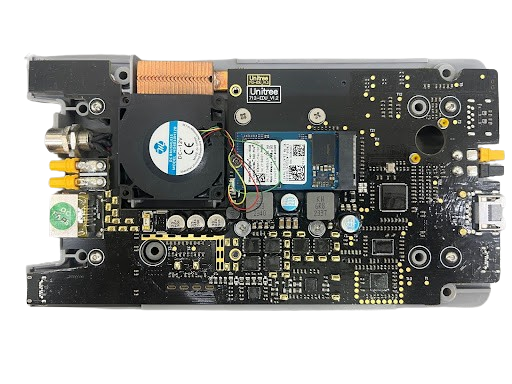

Overview of GO2 EDU Quadruped Robot
The Unitree GO2 EDU is a compact, agile, and intelligent quadruped robot designed for education, research, and development. Building upon the success of earlier quadruped robots like the Unitree Go1, the GO2 enhances mobility, AI integration, and user accessibility, making it an ideal platform for robotics for research, inspection, and human-robot interaction. It's simple and easy to use for those who are passionate about learning Robotics.
Key Features
High Mobility & Dynamic Motion
- Advanced servo motors enabling smooth walking, running, and obstacle navigation
- Real-time adaptive movement (adjusts to terrain changes)
- Capable of small jumps, trotting, and dynamic balancing
AI & Vision Capabilities
- Equipped with depth cameras (Intel Realsense d435i), RGB vision, and LiDAR (Hesai XT-16)
- Supports object recognition, human following, and SLAM
- AI-powered interaction (voice commands, gesture control)
Modular & Programmable
- Open-source SDK (Python, C++, ROS 2 support)
- Customizable behaviors via APIs for motion control, sensor feedback, and AI processing
- Simulation compatibility (Gazebo, Isaac Sim, Genesis or Mujoco for virtual testing)
Compact Design & Sensors
- Weighs around ~15 kg (varies by configuration & hardware)
- Portable for lab, indoor, and outdoor experiments
- IMU for balance and orientation
- Force-sensitive resistors on feet for terrain adaptation
Hardware Components
AI Board (Computing Unit)
Jetson Orin NX 16GB (100 TOPS): The Brain Behind Unitree GO2 Edu
The Unitree GO2 Edu robot is embedded with the Jetson Orin NX 16GB module that delivers 100 TOPS AI performance. This allows the GO2 Edu to make advanced real-time AI operations. This platform has a 1024-core NVIDIA Ampere GPU, 32 Tensor Cores, and an 8-core Arm Cortex-A78AE CPU (2GHz) which ensures parallel processing with speed and power. This makes it capable of handling AI-based SLAM, Obstacle Avoidance, and Computer Vision Gaming. Further, the Deep Learning Accelerators (NVDLA v2) and Vision Accelerator (PVA v2) help in processing large volumes of visual and sensory data. This makes it suitable for robotic autonomy, perception and deep learning inference on GO2 Edu.
Note:
In the below image you can see the entire architecture of Jetson Orin Nx that we are using. It is placed on top of the Robot Dog. We will find a lot of custom ports which we will use to attach different hardware and sensors.
The Unitree GO2 Expansion Dock offers a comprehensive range of power, communication, and peripheral interfaces to enhance robotic functionality.
Pin Chart

| Interface | Description |
|---|---|
| XT30U-F Power Interface |
|
| Gigabit Ethernet Interface |
|
| M8 Aviation Plug Interface |
|
| USB-Type A Interface (USB 3.2 Gen2) |
|
| USB-DP Alt Mode Type-C |
|
| USB-Type C Interface (USB 3.2 Gen2) |
|
| GH1.25-4PIN Interface |
|
Control Board
The control board is the central nervous system of the GO2's locomotion, translating high-level movement commands into precise, real-time motor actions. Unlike industrial robots that rely on proprietary black-box controllers, the GO2's architecture is designed for transparency—making it an ideal platform for learning and experimentation.
In the Robot it consists of 12 servo motors named GO-M8010-6 it is a high-performance brushless DC motor used in the Unitree GO2, relying on RS-485 serial communication for real-time control.
Core Responsibilities
- Motor Actuation: Generates high-frequency PWM signals to drive the 12 brushless DC (BLDC) motors (three per leg). Implements torque, velocity, and position control loops running at 1 kHz or faster to ensure dynamic stability.
- Gait Execution: Stores pre-programmed gaits (walk, trot, jump) and dynamically adjusts them based on IMU feedback and foot force sensors.
- Safety Enforcement: Implements hardware-level overcurrent shutdown and emergency stops if communication with the AI board is lost.
Sensors
Now, let's explore the sensor suite of the Unitree GO2 robot - the sophisticated array of perception systems that give this quadruped its remarkable awareness and intelligence.

The Eyes of the GO2: Vision Systems
At the front of the GO2 sits its primary vision system, featuring a high-definition camera capable of streaming crisp 1080p or 720p video at 15fps. With its wide 120° field of view and light-sensitive F2.2 aperture, this camera serves as the robot's primary visual interface with the world.
Depth Perception: The RealSense Advantage
Complementing the standard camera is the Intel RealSense D435i depth sensor - a game-changer for spatial awareness. This sophisticated device creates detailed 3D maps of the environment by projecting and analyzing infrared patterns. With its ability to detect objects as close as just 10.5cm and operate at up to 90fps, the D435i gives the GO2 an almost human-like understanding of space and distance with a range of 0.3-3m.
The Laser Guide: LiDAR Systems
Perhaps the most technologically impressive sensors are the GO2's LiDAR options. The standard 4D LiDAR performs a staggering 21,600 scans every second, building comprehensive 3D maps in real time. For more demanding applications, the robot is equipped with professional-grade options like the Hesai XT16, which offers a 360° horizontal field of view and 30° vertical coverage environmental scanning.
Feeling the Ground: Tactile Feedback
What truly sets the GO2 apart is how it "feels" its environment. Each foot contains sensitive foot force sensors that measure ground contact with remarkable precision. These aren't just simple pressure detectors - they're sophisticated instruments that can sense subtle variations in terrain, allowing the robot to adjust its gait on the fly.
The Balance Master: IMU System
At the core of the sensor array is the advanced IMU (Inertial Measurement Unit). This isn't just a simple orientation sensor - it's a high-precision system that tracks the robot's every tilt, turn, and acceleration with extreme accuracy.
The GO2's Motion System - Actuators and Joint Architecture
The Unitree GO2's sophisticated mobility stems from twelve precisely coordinated joints - three per leg - arranged in a biologically inspired configuration. The maximum torque a joint can generate is around 45N-m.
Leg Configuration
- Front Right (FR): Leg 0
- Front Left (FL): Leg 1
- Rear Right (RR): Leg 2
- Rear Left (RL): Leg 3

Joint Types
- Hip (Joint 0): Controls side-to-side swinging motion
- Thigh (Joint 1): Manages forward/backward leg movement
- Calf (Joint 2): Adjusts knee extension

Joint Range of Motion Specifications
- Asymmetric thigh ranges (-200°/+90° front vs -260°/+30° rear) enabling powerful rear-leg propulsion
- Calf joint mechanical stops (-156° to -48°) preventing hyperextension
- Hip joint symmetry (±48°) ensuring stable lateral weight shifting

Software Stack
- Pre-installed OS: Linux-based
- SDK/API availability: Python, ROS2, C++
- Simulation tools: Gazebo, Webots integration